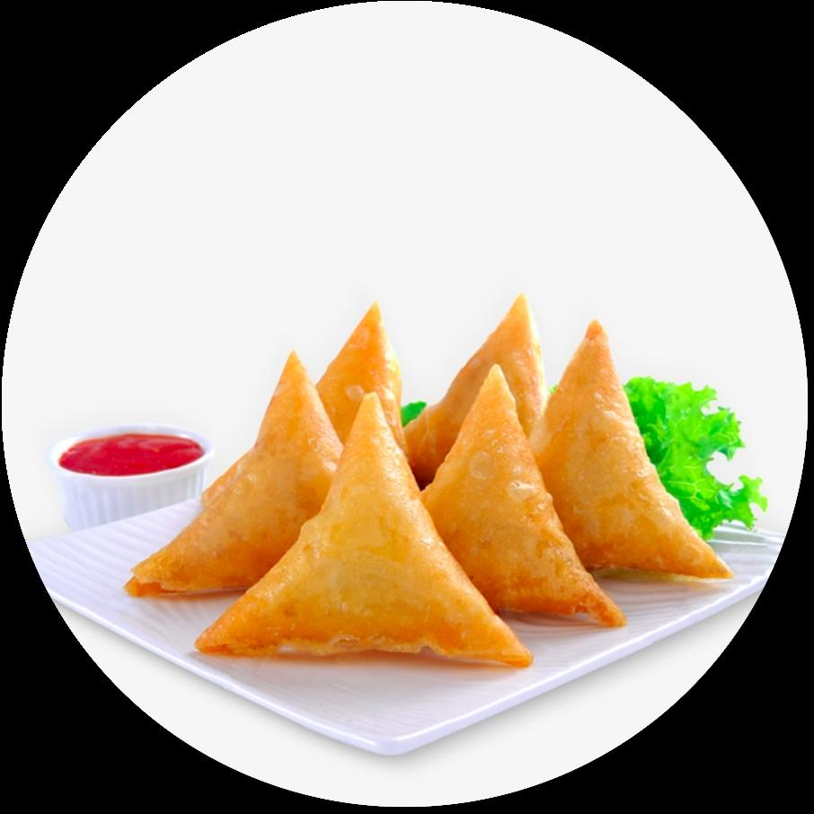
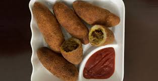

FISAT CANTEEN
Snacks
Samosa: Rs.10
The
samosa
is a fried or baked pastry with a savoury filling ,such as spiced potatoes,onions lentils.

Meat rolls : Rs.10
Meat
roll is a basic bread stuffed with cooked minced meat stew.
